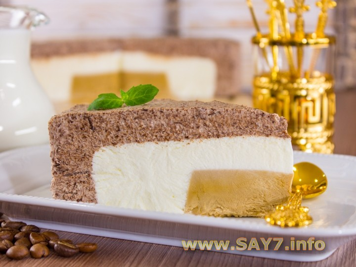

Мороженое кофейно-сливочно-шоколадное
Предлагаю вашему вниманию очень вкусное и красивое мороженое. Самое сложное в этом рецепте найти подходящие по размеру формочки для замораживания (нам понадобятся формы объемом 150 мл, 850 мл и 1700 мл). Не обязательно делать мороженое в круглой форме, можно использовать квадратные формы. Начинки можно использовать абсолютно любые (желательно контрастные по цвету). Из указанного количества ингредиентов получается 6–8 порций.
Ингридиенты:

900 мл сливок 33–35%
550 г сгущенного молока
100 г шоколада
2 ч.л. растворимого кофе
Приготовление
Готовим кофейное мороженое.
Кофе растворить в 2 ст.л. кипятка.
Остудить.
Взбить 100 мл сливок (остальные сливки хранить в холодильнике).
Добавить 50 г сгущенного молока.
Перемешать.
Добавить кофе.
Перемешать.
В формочку объемом 150 мл (диаметром 10 см и высотой 2 см) вылить кофейную массу.
Поставить в морозилку до полного застывания (на 3–4 часа).
Готовим сливочное мороженое.
Взбить 350 мл сливок (оставшиеся сливки хранить в холодильнике).
Добавить 200 г сгущенного молока.
Перемешать.
Застывшее кофейное мороженое выложить в форму объемом 850 мл (диаметром 18 см и высотой 4 см).
Вылить сливочную массу.
Поставить в морозилку до полного застывания (на 4–6 часов).
Готовим шоколадное мороженое.
Шоколад растопить.
Взбить 450 мл сливок.
Добавить 300 г сгущенного молока.
Перемешать.
Добавить шоколад.
Перемешать.
Застывшую кофейно-сливочную заготовку выложить в форму объемом 1700 мл (диаметром 22 см и высотой 5 см).
Выложить шоколадную массу.
Поставить в морозилку до полного застывания (на 6–8 часов).